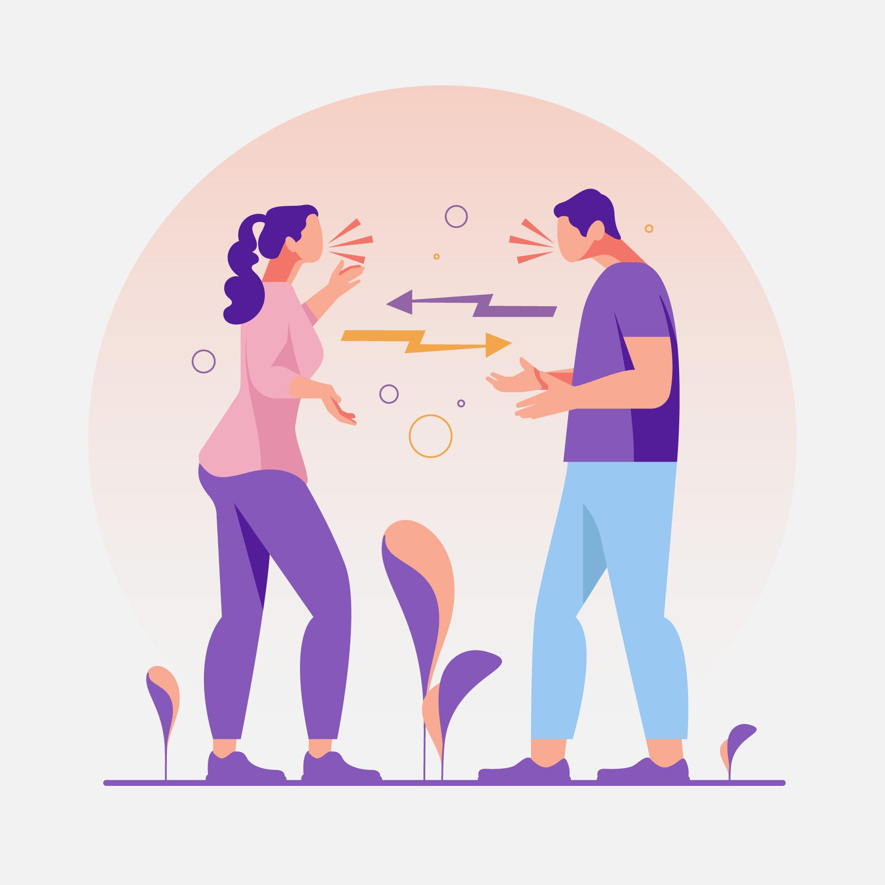
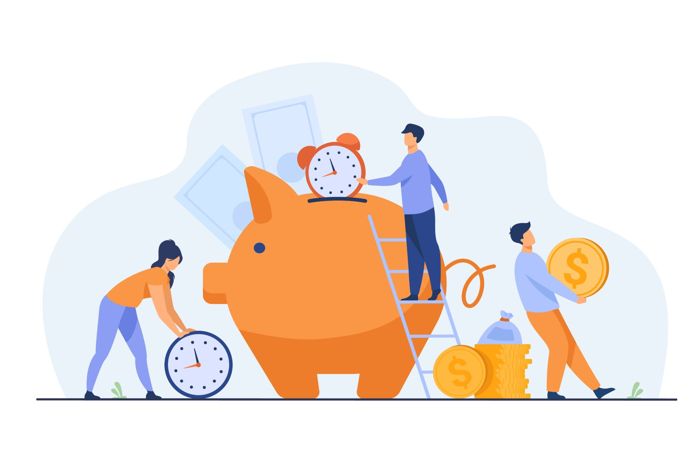
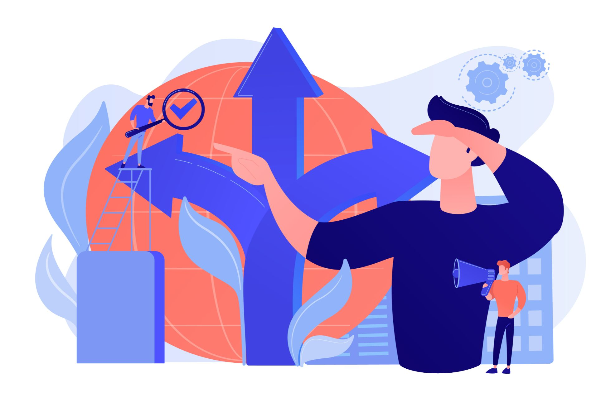

Que es un Personal Shopper Inmobiliario (PSI) y por qué contar con sus servicios
Un PSI es una persona que representa únicamente al comprador, velando de este modo por sus intereses en todo el proceso de la compra de una vivienda. Para poder entender bien por qué es interesante contratar los servicios de un PSI es necesario entender las ventajas que nos puede proporcionar un PSI
-
1
Evita conflicto de intereses
Un PSI no tiene casas en cartera, por tanto, va a proponer siempre la/s propiedad/es que más se ajuste/n a las necesidades del cliente, ya que no tiene los intereses contrapuestos de quien tiene un contrato firmado con un cliente vendedor. Estamos incluso acostumbrados a ver cierta competencia incluso dentro de una misma inmobiliaria ya que un asesor inmobiliario, como es lógico, intentará vender la vivienda que el captó y por tanto por la que más dinero va a generar, porque no nos olvidemos, los agentes inmobiliarios reciben una comisión por cada casa que vendan. Un PSI tiene unos honorarios que se conocen de antemano, y por tanto, no van a existir ese conflicto de intereses, buscando únicamente las viviendas que más se adecúan a las necesidades de su cliente.
 -
2
Ahorra tiempo
Una inmobiliaria, te va a mandar las casas que él tenga en cartera, sin tener en cuenta si realmente es o no interesante para el cliente. De este modo, tendrás que contactar con varias inmobiliarias, recibir decenas de correos con sus casas, buscar en portales más casas que puedan ser interesantes y que no tengan esas inmobiliarias contactadas, ir a verlas (porque todos sabemos que las fotos muchas veces no representan la realidad de la vivienda). Finalmente haremos una selección de las viviendas más interesantes. Todo este engorroso proceso, podemos ahorrárnoslo contratando un PSI ya que él será el que haga todo este trabajo por ti y ahorrándote el 70% de las visitas. Tú sólo tendrás que ir a ver las viviendas finalistas y con un único interlocutor que se encargará de organizarte todas las visitas.
 -
3
No perdemos oportunidades
Un PSI conoce todas las propiedades del mercado, no sólo las que aparecen en los portales inmobiliarios, ya que existen propietarios que por diversas razones no quieren que sus casas aparezcan publicadas. ¿Por qué perder oportunidades buscando sólo entre las viviendas que nos ofrezca una inmobiliaria o en los portales inmobiliarios?
 -
4
Evitamos preocupaciones
Un PSI analiza las viviendas, sus posibles vicios ocultos, posibles futuras derramas de la Comunidad de vecinos, los documentos a firmar que nos pasará la inmobiliaria (oferta, arras…) organiza la firma en notaría…
También hay que tener en cuenta que existe un tanto por ciento de las operaciones que se hacen entre particulares, por lo que es importante tener una persona de confianza que te pueda asesorar sobre los pasos a seguir.
-
5
Ahorra dinero
El PSI sólo está interesado en conseguir el mejor precio posible para su cliente, ya que sus honorarios no dependen ni del precio ni de que realmente compre o no esa vivienda aportándonos informes para conocer realmente el precio de mercado de esa vivienda. Una inmobiliaria tradicional intentará subir lo posible el precio de venta, no olvidemos que cobran un porcentaje sobre esa venta. Está comprobado que con un PSI conseguimos bajar entre un 5 y un 20% sobre el precio de publicación.